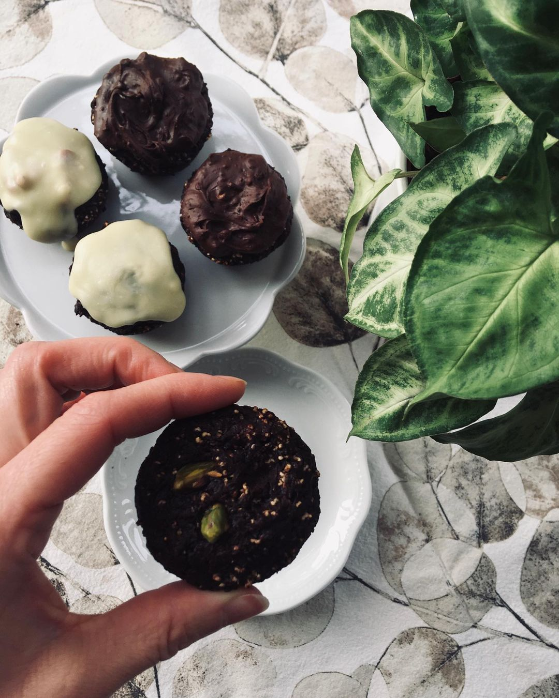

Muffiny sa tak “naprd” fotia. Ja nemam fotostudio, vyuzivam len denne svetlo. Vy co fotite viete, ake je v zime narocne to svetlo stihnut 👻. Cize vecer upiect, do rana pred rodinou skryt, rano rychlo omotat krk salom, vylozit vsetko na stol na terase a s druhym “rozbřeskem” nacvakat. Najskor na ajfon, potom na fuji a este makro s canonom. Potom odprosit kvet, ze si ho z tepla vyrvala do -4C. A potom vnutri zistis, ze si aj tak naj fotku spravila s tym telefonom.😂. Tak si napiste recept, lebo sa fakt prvy x zjedli rychlostou blesku. Cize asi boli dobre:
1,5 zreleho bananu
180g polohrubej spaldovej muky ( tu si dakte podla toho, aky mate plech na muffiny)
3pl bio kokosoveho oleja
7g vinneho kamena/ bezfosfatovy prach na pecenie
10g drvenej pomarancovej kory
20g bio trstinoveho vanilkoveho cukru
70g trstinoveho cukru
100g bio puffovaneho amarantu ( mam z dmky)
6pl tmaveho kakaa
Trochu vody
Stipka soli
Orechy podla chuti
Cokolada na polevu
Ako na to?
Muku, praskok do p, sol a vanilkovy zmiesajte dokopy spolu s kakaom. V inej miske roztlacte banan. Toto ja fest musim dobre spravit, lebo kto u nas zaciti banan v muffine, ten konci z jeho konzumaciou. 😂. Do suchej zmesi primiesajte kokosovy tuk, banan a cukor a amarant, vymiesajte cesto - ja som likvidovala banany z kabelky zabudnute, cize boli len obuchane, nie prezrete. Toto je velmi dolezity fakt, lebo ak je banan redsi, mozno nebude treba pridat vodu. Konzistenciu cesta vidite na mojom poste - fotke s pomahajucim hafanom.
Nalzila som do plechu na muffiny, vytreteho kokosovym tukom. Orechy az navrch. Kosicky s potlacou zanovito vynechavam. Chcem byt viac eko a dost blbo sa to z nich je.🤪 Pecte na 175-190C cca 16min. Pouzila som teplovzduch a trochu paru na entré. Lajkom sa nebranim, vopred dakujem ak vyskusate. ❤️
#vegancupcakes #veganmuffins #eggfree #laktofree #mafiny #cokoladynikdyniejedost #kurzyvareniashenrietou #bloger #blog #foodblog #instabaking #pecenie #sladke #mucniky